Color is a crucial component of data visualization. It has the power to evoke emotions, highlight patterns, and communicate information that might be difficult to convey through other means. Effective use of color in data visualization can enhance the viewer’s understanding and engagement with the data, while poor use of color can obscure important information and create confusion. We will learn how to easily create different color schemes and palettes.
Color is a powerful tool because it can help convey information quickly and effectively. By using different colors to represent different data points or categories, we can create visual patterns that are easy to interpret and remember. Color can also be used to highlight or draw attention to important trends or outliers. Additionally, color can make visualizations more engaging and appealing, which can help hold viewers’ attention and make them more likely to understand and remember the information.
Color evokes responses that can influence people’s emotions and perception. Colors signify different emotions for example in the US red is associated with danger or passion, blue with calmness or sadness, and green with nature or health. Cultures have attached different meaning to colors. So tailor color to your audience to elicit desired responses. The effect of color is believed to be so powerful that locker room at Iowa’s Kinnick Stadium has been painted pink since 1979 with an idea to lower opponent’s testosterone levels.
We use color to emphasize certain data and give context. Below are graphs comparing GDP of European Countries in 1997. First graph gives each country its own color, creating a “explosion at a candy factory”. Second graph is an improvement as it removes the distraction, emphasizes the country of the interest by highlighting “Greece” and greying out the rest. The “Red” color signals that Greece might be doing not so well.
Show the code
p1 <- gapminder1997eu %>%mutate(is.Greece = country =="Greece") %>%ggplot(aes(y =fct_reorder(country, gdpPercap), x = gdpPercap)) +geom_segment(aes(yend = country, xend=0, color = country), size =1, show.legend =FALSE) +geom_point(aes(color = country), show.legend =FALSE, size =3) +theme_minimal(base_size =12) +theme(panel.grid.major.y =element_blank(),panel.grid.minor =element_blank()) +# ggplot2::scale_color_manual(values = c("#7286D3","#D37286")) +labs(x ="GDP per Capita", y =element_blank()) +coord_cartesian(expand =FALSE, clip ='off')p2 <- gapminder1997eu %>%mutate(is.Greece = country =="Greece") %>%ggplot(aes(y =fct_reorder(country, gdpPercap), x = gdpPercap)) +geom_segment(aes(yend = country, xend=0, color = is.Greece), size =1, show.legend =FALSE) +geom_point(aes(color = is.Greece), show.legend =FALSE, size =3) +theme_minimal(base_size =12) +theme(panel.grid.major.y =element_blank(),panel.grid.minor =element_blank()) + ggplot2::scale_color_manual(values =c("grey","#D37286")) +labs(x ="GDP per Capita", y =element_blank()) +coord_cartesian(expand =FALSE, clip ='off')p1 + p2 +plot_annotation(title ="Countries in Europe by GDP per Capita",theme =theme(plot.title =element_text(size =16)))
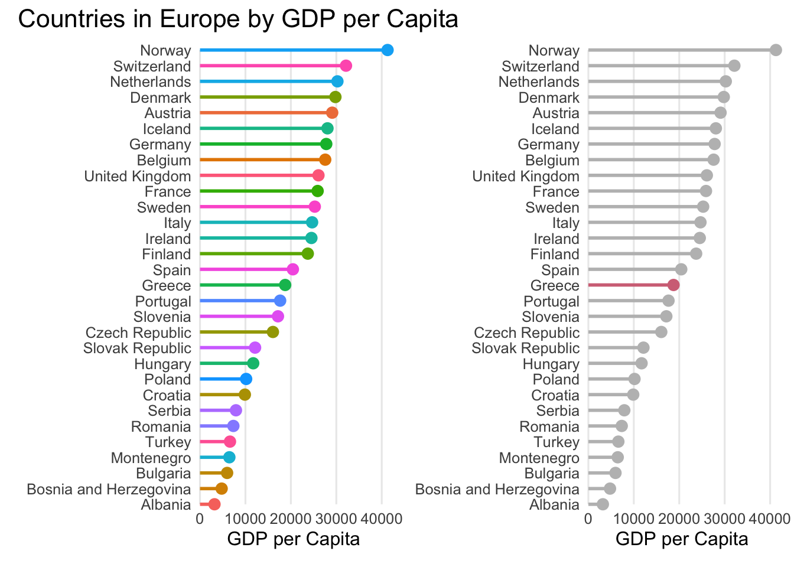
15.1.2 Comparing Two Things
15.1.2.1 Complementary Harmony with a Positive/Negative Connotation
Complementary Harmony refers to the use of colors that are opposite each other on the color wheel to create a strong contrast. This creates a positive/negative connotation that is good for showcasing differences. Colors near each other on the wheel can also work well together, but opposite colors provide the strongest support for a key color. The example below shows the comparison between population of Asia and Europe. The use of bright purple emphasizes the outstanding population growth of Asia, while the green color highlights the slower population growth in Europe.
Show the code
p3 <- continents %>%filter(continent %in%c("Asia","Europe")) %>%ggplot(aes(x=year, y = total_pop_mil, color = continent)) +geom_line(linewidth =1.5) +theme_minimal() +theme(legend.position ="none") +scale_y_log10() +scale_color_manual(values =c("#DA70D6", "#70DA74")) +geom_dl(aes(label = continent), method ="smart.grid") +labs(x =element_blank(), y ="Population in Millions (log10)")complementary + p3 +plot_annotation(title ="Complementary Harmony with a Positive/Negative Connotation", theme =theme(plot.title =element_text(size =16)))
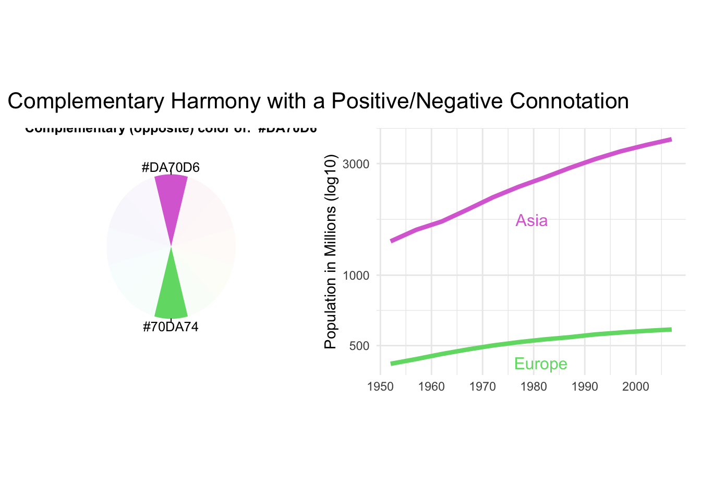
15.1.2.2 Near Complementary Harmony for Highlighting Two Series Where One Is the Primary Focus
Near Complementary Harmony is a color scheme that creates good contrast without using polar opposite colors. It involves selecting a color that is 33% around the color wheel from the key color instead of the full 50%. This works well for highlighting two series where one is the primary focus. It is best to use warm colors for the key color and cool colors for the complementary colors. If necessary, the complementary colors can be muted by decreasing their saturation or altering their lightness to reduce the contrast with the background. The example below highlights the importance of population growth in Asia, with Europe being presented neutrally as a point of comparison rather than as a slow-growing region.
Show the code
p4 <- continents %>%filter(continent %in%c("Asia","Europe")) %>%ggplot(aes(x=year, y = total_pop_mil, color = continent)) +geom_line(size =1.5) +theme_minimal() +theme(legend.position ="none") +scale_y_log10() +scale_color_manual(values =c("#DA70D6", "#70D6DA")) +geom_dl(aes(label = continent), method ="smart.grid") +labs(x =element_blank(), y ="Population in Millions (log10)")triadic + p4 +plot_annotation(title ="Near Complementary Harmony for Highlighting \nTwo Series Where One Is the Primary Focus",theme =theme(plot.title =element_text(size =16)))
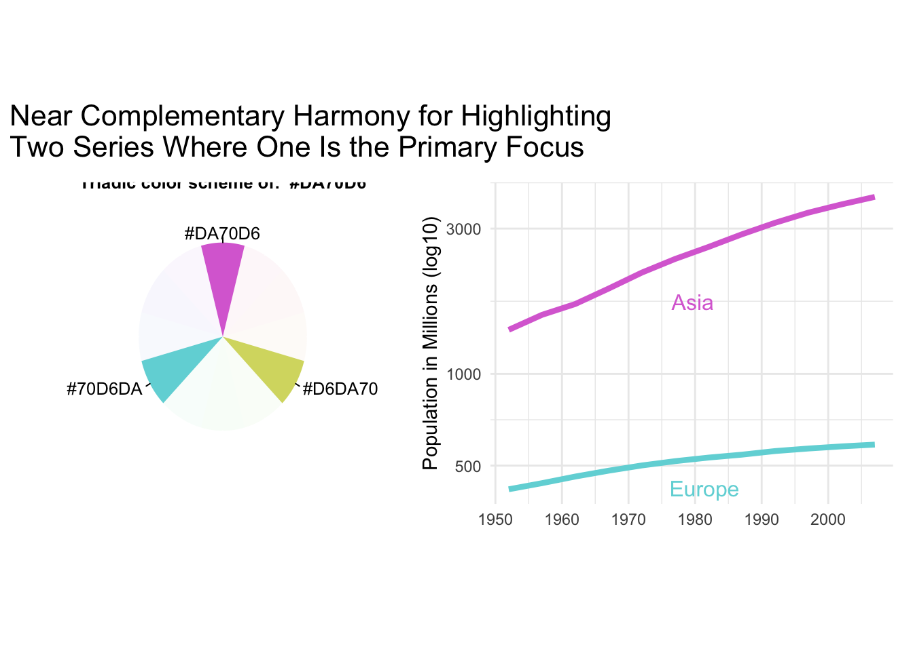
15.1.3 Color Palettes for Comparing Three Things
15.1.3.1 Analogous/Triadic Harmony for Highlighting Three Series
Analogous harmony involves using neighboring colors to the key color for simple distinctions among categories. In contrast, triadic harmony uses the key color and two complementary colors evenly spaced around the color wheel for greater contrast, but may lose the emphasis on the key color. The example below displays the population of three countries without any specific emphasis.
Show the code
p5 <- continents %>%filter(continent %in%c("Asia","Europe","Americas")) %>%ggplot(aes(x=year, y = total_pop_mil, color = continent)) +geom_line(size =1.5) +theme_minimal() +theme(legend.position ="none") +scale_y_log10() +scale_color_manual(values =c("#DA70D6", "#DA70A1", "#A970DA")) +geom_dl(aes(label = continent), method ="smart.grid") +labs(x =element_blank(), y ="Population in Millions (log10)")analogous + p5 +plot_annotation(title ="Analogous/Triadic Harmony for Highlighting Three Series",theme =theme(plot.title =element_text(size =16)))
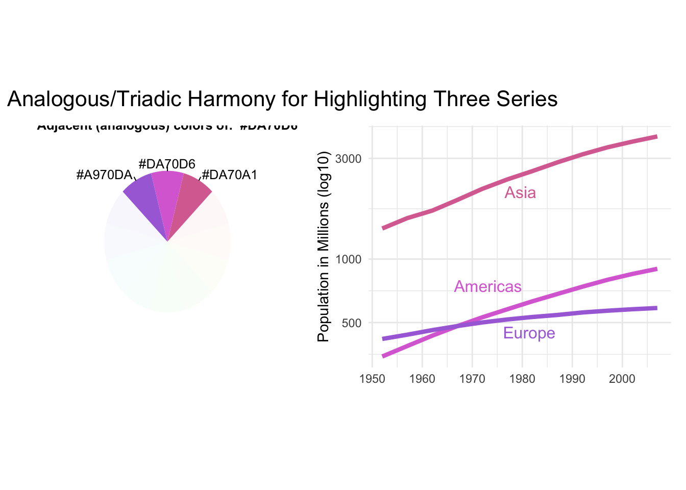
15.1.3.2 Highlighting One Series Against Two Related Series
Near Complementary Harmony is a color scheme that creates good contrast without using polar opposite colors. It involves selecting a color that is 33% around the color wheel from the key color instead of the full 50%. This works well for highlighting two series where one is the primary focus. It is best to use warm colors for the key color and cool colors for the complementary colors. If necessary, the complementary colors can be muted by decreasing their saturation or altering their lightness to reduce the contrast with the background. The example below highlights the GDPs of 3 countries with emphasis on Asia through the use of the purple color. Europe and the Americas are depicted with similar shades of green, indicating their lesser significance for the narrative.
Show the code
p6 <- continents %>%filter(continent %in%c("Asia","Europe","Americas")) %>%ggplot(aes(x=year, y = total_gdppc, color = continent)) +geom_line(size =1.5) +theme_minimal() +theme(legend.position ="none") +scale_y_log10() +scale_color_manual(values =c( "#A1DA70", "#DA70D6", "#70DAA9")) +geom_dl(aes(label = continent), method ="smart.grid") +labs(x =element_blank(), y ="GDP per Capita (log10)")complementary_3 + p6 +plot_annotation(title ="Highlighting One Series Against Two Related Series",theme =theme(plot.title =element_text(size =16)))
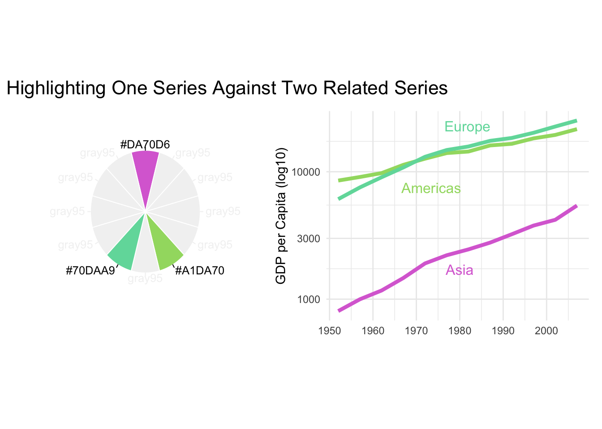
15.1.4 Color Palettes for Comparing Four Things
15.1.4.1 Analogous Complementary for One Main Series and Its Three Secondary
Analogous Complementary is a color scheme that uses four colors, where the key color and its complementary color are combined with two colors that are one step away from the complementary color. This scheme still allows for analogous harmony while creating a quartet of colors that can be used for one main series and its three components. The similarities between the three complementary colors make the key color stand out. The example below shows Malaysian Economic Miracle in comparison to Malaysia’s three neighbors.
Show the code
p7 <- malay_miracle %>%ggplot(aes(x = year, y = gdpPercap, color = country)) +geom_line(linewidth =1.5) +theme_minimal() +#scale_y_log10() +theme(legend.position ="none") +scale_color_manual(values =c("#A1DA70", "#DA70D6", "#70DA74", "#70DAA9")) +geom_dl(aes(label = country), method ="smart.grid") +labs(x =element_blank(), y ="GDP per Capita (log10)")complementary_4 + p7 +plot_annotation(title ="Analogous Complementary for One Main Series and \nIts Three Components",theme =theme(plot.title =element_text(size =16)))
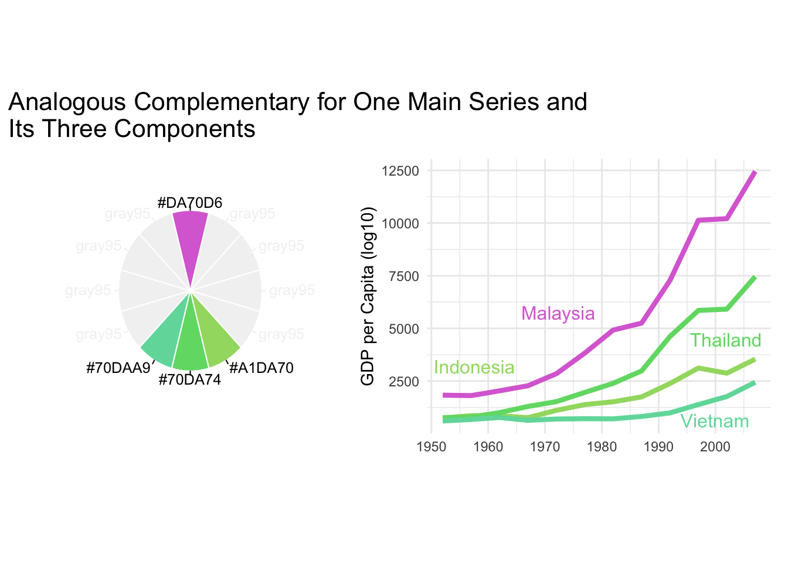
15.1.4.2 Double Complementary for Two Pairs Where One Pair Is Dominant
Double Complementary Harmony is a color scheme suitable for four different data series that are divided into two groups of two series. The scheme involves selecting the key color and one of its two adjacent colors on the color wheel. Then, choose the complements of both the key color and its adjacent color to serve as their respective partners. It is recommended that the key color and its adjacent color be warmer colors, while the complementary colors should be cooler colors. This scheme works well for highlighting two pairs where one pair is dominant. Below is an example that compares the GDP of the two top and two bottom countries in 1952. Switzerland and Norway are assigned purple-ish colors, putting them in one group, while Bosnia and Albania are assigned green-blue colors to differentiate them.
Show the code
p8 <- gapminder %>%filter((continent =="Europe")) %>%mutate(bot_top =case_when( country %in%c("Albania") ~"Albania", country %in%c("Bosnia and Herzegovina") ~"Bosnia", country %in%c("Switzerland") ~"Switzerland", country %in%c("Norway") ~"Norway", T ~"other")) %>%ggplot(aes(x = year, y = gdpPercap, color = bot_top, group = country, alpha = bot_top))+geom_line(linewidth =1.5) +theme_minimal() +theme(legend.position ="none", legend.title =element_blank()) +scale_y_log10() +geom_dl(aes(label = bot_top), method ="smart.grid") +scale_color_manual(values =c("#70DA74", "#70D6DA", "#DA70D6", "grey", "#DA7470")) +scale_alpha_manual(values =c(1,1,1,0.3,1)) +labs(#title = "Growth of the bottom 2 and \ntop 2 countries by GDP in 1952",x =element_blank(), y ="GDP per Capita (log10)")tetradic + p8 +plot_annotation(title ="Double Complementary for Two Pairs Where One Pair Is Dominant",theme =theme(plot.title =element_text(size =16)))
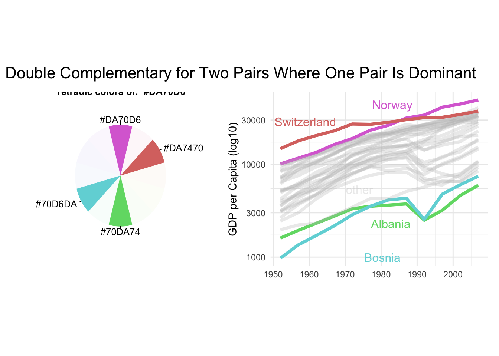
15.1.4.3 Rectangular or Square Complementary for Four Series of Equal Emphasis
Rectangular or Square Complementary is a color scheme suitable for four series of equal emphasis where the objective is to use colors to make categorical distinctions. This scheme involves selecting the key color and its complementary color, but unlike the double complementary scheme, two additional colors are added to create a rectangle or square on the color wheel. The resulting colors create a clear distinction between the four series. This scheme is similar to double complementary but works better when all four series are of equal importance. The example below displays the Four Asian Tigers, a group of four fast-developing economies in East Asia that experienced high growth rates and rapid industrialization from the 1960s to 1990s. Hong Kong, Singapore, South Korea, and Taiwan are all equally important with the emphasis on the dynamic of their economies.
Show the code
p9 <- asian_tigers %>%ggplot(aes(x = year, y = gdpPercap, color = country)) +geom_line(linewidth =1.5) +theme_minimal() +theme(legend.position ="none") +scale_y_log10() +scale_color_manual(values =c("#DA70D6", "#DAA970", "#70DA74", "#70A1DA")) +geom_dl(aes(label = country), method ="smart.grid") +labs(x =element_blank(), y ="GDP per Capita (log10)")square + p9 +plot_annotation(title ="Rectangular or Square Complementary for \nFour Series of Equal Emphasis",theme =theme(plot.title =element_text(size =16)))
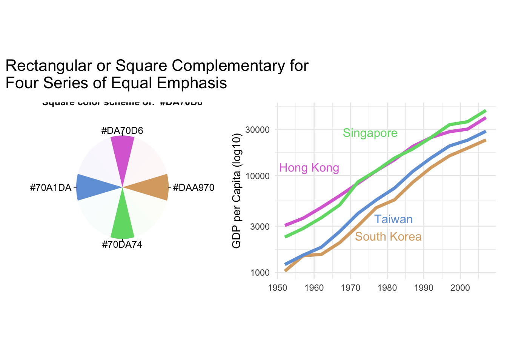
15.2 Sequential and Divergent
Sequential colors are a gradient of colors from light to dark, assigned to numeric values, based on hue or lightness. The colors depend on the background, with lower values assigned lighter colors, and higher values assigned darker colors. A single hue or a sequence of hues can be used.
Let’s use our beloved purple to GDP of different countries.
Diverging color schemes are used when the numeric variables have a meaningful central value such as zero. They combine two sequential palettes with a shared endpoint that rests on the central value, with positive values assigned colors on one side and negative values on the other side. The central value should have a light color so that darker colors can indicate more distance from the center. It is important to keep the color scheme simple to avoid diluting the meaning and confusing the audience. Proper use of colors can reduce the cognitive load and help people understand complex information more easily.
Prebuilt color scales like “Viridis” are designed with perceptual uniformity in mind, which makes them visually appealing and easy to interpret. They provide a consistent and standardized color scheme, eliminating the need for custom design and testing. In addition, prebuilt color scales can help people with color blindness to better interpret data visualizations, as they use colors with consistent visual contrast. Using prebuilt color scales can help ensure that data visualizations are accessible to the widest possible audience.
There are several popular color systems that are commonly used in digital design and data visualization. The sRGB color system is the standard color space used for displaying images and graphics on digital displays. It is a device-dependent color space that is designed to provide consistent color reproduction across a wide range of devices. The HCV color system is based on hue, chroma, and value, and is used to create visually distinct color palettes for use in data visualization. The HSL color system is based on hue, saturation, and lightness, and is often used to create color palettes for web design and user interfaces. The LAB color system is a device-independent color space that is designed to accurately represent colors across different devices and environments. It is often used in professional printing and color management applications. Each of these color systems has its own strengths and weaknesses, and the choice of which one to use depends on the specific needs of the project.
To see how these spaces look, check out this amazing video!
15.3.1 HSL
The HSL color system describes colors using three parameters: hue, saturation, and lightness. Hue is represented by a value from 0 to 360 degrees on the color wheel, and determines the basic color of the pixel. Saturation represents the purity of the hue, or how much gray is mixed into the color. Saturation ranges from 0% (gray) to 100% (pure hue). Lightness, on the other hand, represents the amount of white or black mixed with the color, with 0% being black, 50% being the original color, and 100% being white. HSL is often used in graphic design and web development, as it allows for the easy selection of colors based on hue, saturation, and lightness. However, it has some limitations, such as not being perceptually uniform, meaning that changes in the numeric values of the parameters may not correspond to equal changes in the perceived color.
15.3.2 HSV
The HSV color system describes colors using three parameters: hue, saturation, and value. Hue and saturation are the same as in HSL. Value represents the brightness of the pixel, with 0% being black and 100% being the brightest possible color. The HSV color system is often used in graphics and image editing software, as it allows for easy selection of colors. However, it is also not perceptually uniform.
15.3.3 HCL (my favorite)
HCL color is a perceptually uniform color space used in data visualization and scientific applications. It consists of three values: hue, chroma, and lightness, which represent the color, saturation, and brightness of a color, respectively. Due to its ability to mimic human perception of color, HCL color space is becoming increasingly popular in design and user interface applications.
15.3.4 LAB
The LAB color system is a device-independent color space that is designed to accurately represent colors across different devices and environments. It consists of three parameters: L (lightness), a (the position between red/magenta and green), and b (the position between yellow and blue). The L parameter represents the brightness of the color, ranging from 0 (black) to 100 (white). The a and b parameters represent the color channels, with positive values representing colors in the red, and yellow directions, respectively, and negative values representing colors in green and blue direction. The LAB color space is used in professional printing and color management applications, as it allows for accurate color matching across different devices and environments. Additionally, more recent LAB color spaces (ex. OKLAB) are perceptually uniform, meaning that equal distances in LAB color space correspond to equal steps in perceived color difference.
15.3.5 OKLAB
OKLAB is a color space designed to be more perceptually uniform than other color spaces like sRGB or LAB. It uses an opponent color model, where the color information is encoded L – perceived lightness a – how green/red the color is b – how blue/yellow the color is. This means that the OKLAB color space can accurately represent colors while maintaining perceptual uniformity. OKLAB was developed to address the limitations of other color spaces. The use of OKLAB is becoming increasingly popular in digital design and data visualization, as it can provide more accurate and consistent color representation. You can learn about OKLAB from the video folder.
15.3.6 Perceptual Uniformity
Humans are not machines, we wee see things with our eyes and process them with our brain. What might appear like a similar color to a machine for humans will not. As an example, below are two color wheels one is RGB (perceptually non-uniform) and the other is HCL (uniform). When the color spectra are viewed in Gray scale the uneven nature of RGB becomes apparent. A technical definition is that a perceptual uniform color space ensures that the difference between two colors (as perceived by the human eye) is proportional to the Euclidian distance within the given color space.
uniform perception
15.3.6.1 Warning Colormaps might Increase Risk of Death!
In 1990s data visualization specialists adopted Rainbow Color Map with the most famous variation being Jet default palette. Many researchers expressed concerns as the non-uniform nature of the palette introduced transitions that could be perceived incorrectly.
Rogowitz and Treinish raised concerns about the Rainbow Color Map in 1998 “Data Visualization: The End of the Rainbow”(Rogowitz and Treinish 1998), and Borland and Taylor highlighted additional concerns in a 2007 paper “Rainbow Color Map (Still) Considered Harmful” (Borland and Taylor Ii 2007). In 2011, Borkin and her team conducted user studies on the application of various color maps, including the Rainbow Color map, to medical visualization problems. Their findings in “Evaluation of Artery Visualizations of Heart Disease Diagnosis” (Borkin et al. 2011) showed that a perceptually uniform color map resulted in fewer diagnostic errors than the Rainbow Color map. So, diagnostic errors could be reduced by simply switching to a proper color palette. The problem of misuse of color still persists as outlined by Crameri, Shephard and Heron in “The misuse of colour in science communication” (2020) (Crameri, Shephard, and Heron 2020) – a paper that I believe must be read by any scientist.
Rogowitz, B. E., and L. A. Treinish. 1998. “Data Visualization: The End of the Rainbow.”IEEE Spectrum 35 (12): 52–59. https://doi.org/10.1109/6.736450.
Borland, David, and Russell M. Taylor Ii. 2007. “Rainbow Color Map (Still) Considered Harmful.”IEEE Computer Graphics and Applications 27 (2): 14–17. https://doi.org/10.1109/MCG.2007.323435.
Borkin, M., K. Gajos, A. Peters, D. Mitsouras, S. Melchionna, F. Rybicki, C. Feldman, and H. Pfister. 2011. “Evaluation of Artery Visualizations for Heart Disease Diagnosis.”IEEE Transactions on Visualization and Computer Graphics 17 (12): 2479–88. https://doi.org/10.1109/TVCG.2011.192.
Crameri, Fabio, Grace E. Shephard, and Philip J. Heron. 2020. “The Misuse of Colour in Science Communication.”Nature Communications 11 (1): 5444. https://doi.org/10.1038/s41467-020-19160-7.
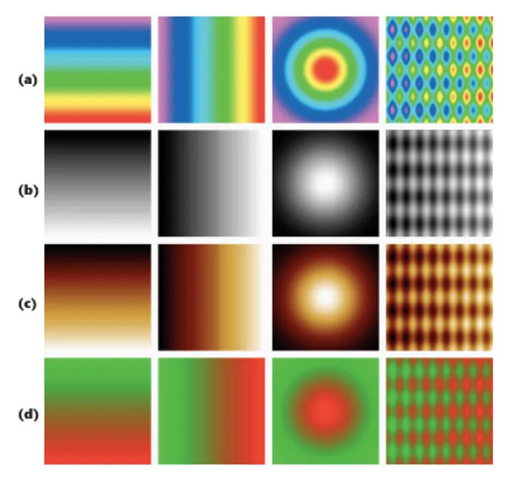
Image from the “Rainbow Color Map (Still Considered Harmful)
All of these issues are amplified once we consider that roughly 8% of all men and 0.5% of all women are colorblind. There are three main forms of red(protan), gren(deutan), and blue (tritan) disorders, corresponding to color sensitive cones in our eyes. To check whether your visualization is colorblind friendly use Coblis(“Coblis Color Blindness Simulator Colblindor,” n.d.).
To improve the readability of your colors vary their value and hue, but try not to include both red and green into your graphics as red-green colorblindness is the most common.
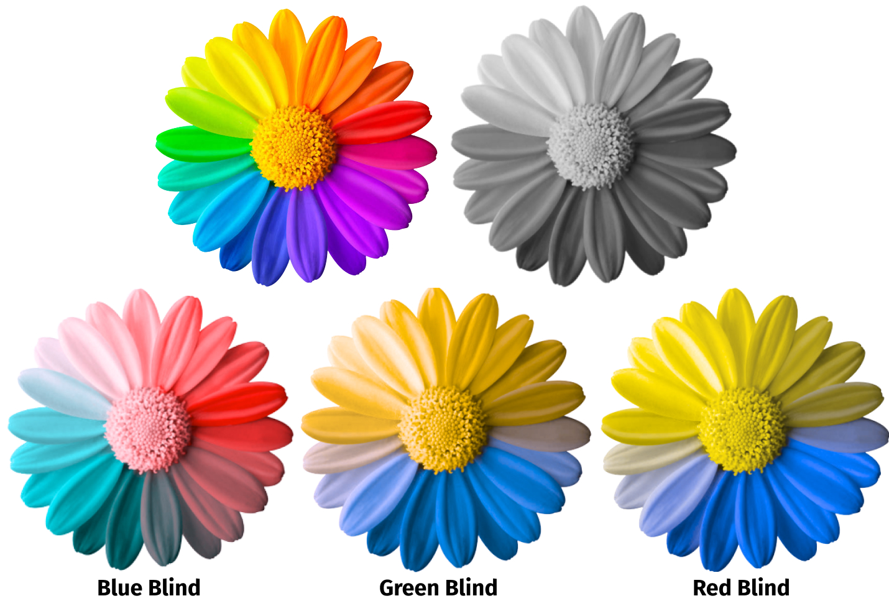
Color Blind Rainbow Flower
15.3.6.2 So what should you use?
A simple and correct answer would be to use a scientific color map that you find pretty and use it as your default. If you need some help use this graph from “The misuse of colour in science communication”.
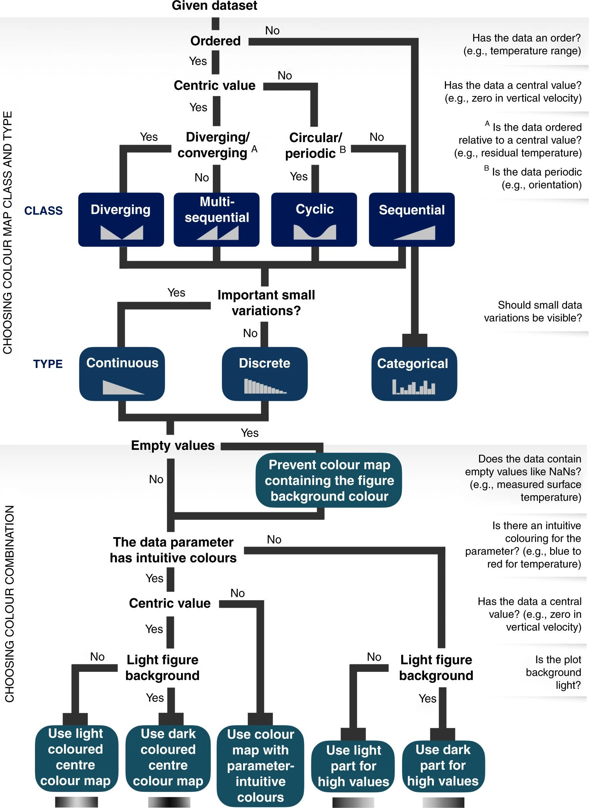
choosing color map
If you want to pick colors yourself use HSL, because it is the most intuitive one and the easiest to make color palettes in. I would also recommend tinkering with OKHSL, which is a child of OKLAB and HSL producing a perceptually uniform HSL space. Try out both of them and see the difference here1.
1 https://bottosson.github.io/misc/colorpicker/
15.3.7 Where do I find color waves?
Adobe Color - Adobe Color let’s you create color palettes using different color harmony rules and color modes. You can also pick colors from your image, make gradients from images, and test for accessibility.
Paletton - Amazing tool for creating color palettes
Color Brewer - Color Brewer is a web-based tool that provides color schemes perceptual uniform for maps and data visualizations.
Color Thief - Color Thief let’s you extract colors from your image to create nature-inspired palettes.
Viz Palette - Viz Palette can be used to check your color palettes before creating visualizations. It allows you to view color sets in example plots, simulate color deficiencies, and modify the colors of your palette.
Scientific colour maps - A collection of uniform and readable color maps for scientific use.